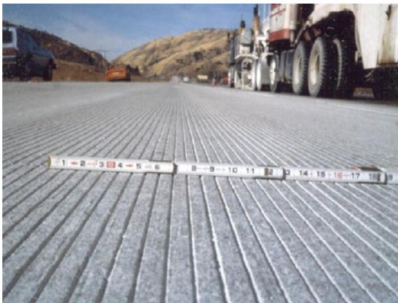
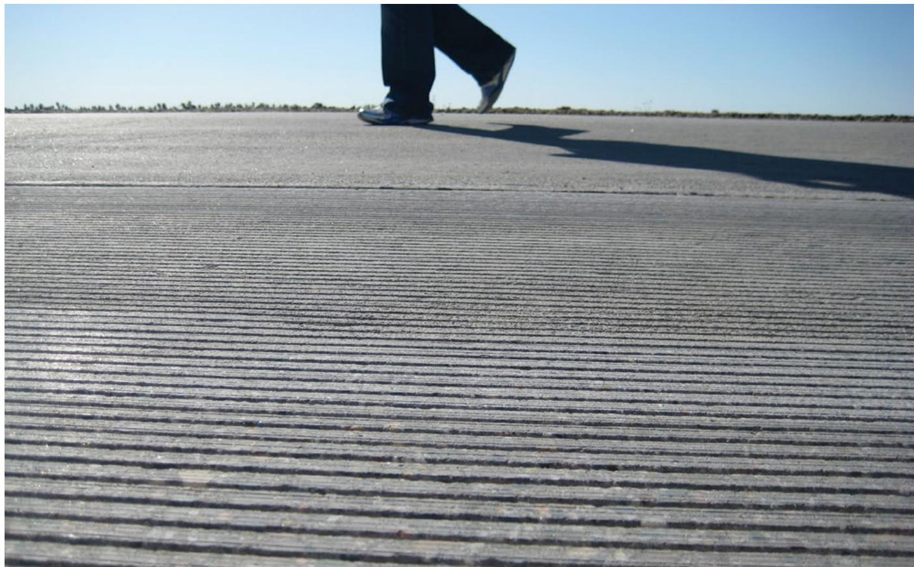

Diamond Grinding
Diamond grinding is a pavement preservation technique that removes a thin, uniform layer of hardened concrete using closely spaced diamond-embedded cutting tools mounted on rotating shafts. The process abrades the surface to eliminate high spots and short-wavelength irregularities, thereby restoring smoothness, texture, and ride quality while enhancing skid resistance through improved macrotexture [1]. It can be applied to existing rough slabs or newly placed concrete to achieve desired surface characteristics, including the reduction of tire-pavement noise when combined with grooving techniques [2]. Because the method only removes material and does not add structural capacity, it addresses surface defects but requires other rehabilitation techniques for underlying structural deficiencies [1].
Diamond grinding restores pavement integrity by milling away damaged concrete layers with rotating diamond-tipped blades. This process eliminates surface irregularities to restore texture and improve ride quality, while also correcting profile deviations that affect drainage and safety. Diamond Grinding employs rotating diamond-tipped blades to mill away a precise layer of concrete, thereby restoring surface texture and eliminating irregularities that compromise ride quality.
Sources (3)
Sub-concepts (1)
Key findings
- Diamond grinding is constrained by regulatory limits on removal depth, concrete age, and area coverage, preventing its use as a blanket smoothing technique and requiring reliance on proper placement for overall smoothness [3].
- Agencies screen projects using specific thresholds for faulting, roughness, and wear to determine viability, ensuring the technique is applied only when serious structural or material deficiencies are absent [1].
- The method restores smoothness and macrotexture without altering vertical clearances such as bridge headroom or curb geometry, making it uniquely compatible with existing infrastructure constraints [1].
- Aggregate hardness significantly affects long-term performance, as harder aggregates slow texture polishing while softer aggregates accelerate the loss of skid resistance [1].
- Larger, heavier grinding equipment provides the precise control necessary for consistent depth and lateral coverage during operations [1].
- Successful implementation requires completing all structural repairs prior to grinding and adhering to strict quality criteria regarding textured area percentage and vertical deviation [1].
Practice, Constraints, and Performance
Evidence: 3 reports (2 primary)
Diamond grinding is a pavement preservation technique that employs closely spaced diamond-embedded blades to abrade a thin, uniform layer of hardened concrete, thereby eliminating high spots and short-wavelength irregularities [1]. The process restores surface smoothness and creates a uniformly textured finish that enhances macrotexture for improved vehicle traction while simultaneously reducing tire-pavement noise [2]. Because the method removes material rather than adding structural capacity, it cannot correct underlying slab deficiencies, which must be addressed through separate rehabilitation techniques [1].
The following figure illustrates the surface texture provided by this process.
 Diagram of the surface texture profile produced by diamond grinding. [1]
Diagram of the surface texture profile produced by diamond grinding. [1]
The figure displays a schematic cross-section of a pavement surface characterized by alternating grooves and land areas, with specific dimensions labeled as depth, groove width, and land area.
Research problem — Concrete pavements routinely develop surface distresses such as faulting, excessive roughness, and insufficient macrotexture that degrade ride quality, safety, fuel efficiency, and environmental performance [1]. The practice of diamond grinding on airport pavements faces systemic quality-control challenges in verifying groove dimensions and equipment calibration to ensure reliable friction and drainage benefits [3]. Regulatory constraints cap the allowable removal depth and treated surface area, creating a tension between restoring surface texture and maintaining structural integrity and joint load transfer [3].
The figure below illustrates a diamond-grooved concrete pavement, highlighting the typical groove dimensions relevant to these quality-control considerations.

Longitudinally diamond-grooved concrete pavement showing typical grooving dimensions [1]The image displays a close-up view of a concrete surface featuring closely spaced, parallel longitudinal grooves. A ruler is placed across the pavement to demonstrate the dimensions of these grooves, which are described as “Longitudinally diamond-grooved” in the source context.
State of the art — Current practice treats diamond grinding as a limited corrective tool rather than a primary smoothing method, with specifications capping removal depth and restricting application to small sublot percentages to preserve structural integrity [3]. The field has shifted from prescribing specific blade geometries to prioritizing large-scale equipment precision for consistent texture, while increasingly integrating grinding with complementary preservation strategies like overlays and low-noise textures such as NGCS [1] [2]. Performance is characterized by significant reductions in roughness and noise alongside improved friction, though the technique does not add structural capacity and requires pairing with other treatments to address underlying load-transfer deficiencies [1].
Findings from the reports
- Effectiveness was found to depend more on equipment size and operational practices than on blade spacing; larger, heavier grinders provided the stability needed for target texture depth and consistent lateral coverage, while maintaining the grinder’s match line off the wheel path, true bogie wheels, limited fin‑height variation, and minimal vibration were identified as essential for repeatable results [1].
- Diamond grinding produced a non‑porous concrete surface that consistently yielded lower tire‑pavement noise than conventional ground surfaces, and monitoring showed the quieter condition persisted over years with only a few projects losing the advantage after up to six years of service [1].
- When pavement roughness and faulting were moderate and no serious structural deficiencies existed, diamond grinding was found to be a cost‑effective preservation tool that restored smoothness, corrected faulting, and improved macrotexture without altering bridge headroom or gutter capacity [1].
- Agencies screened projects using thresholds such as joint fault greater than 0.10 in, IRI between 80 and 170 in/mi, and studded‑tire wear of 0.25–0.50 in, together with traffic level, speed, and environmental considerations, to identify pavement sections suitable for grinding [1].
- Harder aggregates were reported to raise grinding cost but slow texture polishing, whereas softer aggregates accelerated loss of skid resistance, demonstrating that aggregate hardness influences both economic and durability outcomes [1].
- Integrating diamond grinding with other preservation actions—such as milling away an overlying asphalt overlay before grinding—produced lower life‑cycle costs and reduced environmental impact compared with alternative treatments [1].
- Regulatory agencies constrained diamond grinding to localized corrective measures by capping material removal at specific depths, requiring minimum concrete age, and limiting the area of application per sublot [3].
Novelty & rigor — The introduction of the Noise-Reduced Ground Concrete Surface (NGCS) represents a novel shift from equipment-centric geometry to micro-topography control, utilizing a two-pass regimen to minimize upward texture and achieve superior noise reduction [1]. This approach is distinguished by its integration of intentional grooving with conventional grinding to simultaneously enhance friction and reduce tire-pavement noise, moving beyond simple surface smoothing [2]. Reproducibility in standard corrective applications relies on strict adherence to established agency protocols regarding concrete age, grind depth limits, and mandatory test sections rather than innovative procedural changes [3].
The following figure illustrates the resulting texture of a next-generation concrete surface (NGCS).

A low-angle view of a concrete pavement surface featuring closely spaced transverse grooves, with the lower legs and shadow of a pedestrian visible in the background. [2]The image displays a concrete pavement surface characterized by fine, parallel transverse grooves that create a distinct macrotexture across the foreground. This visual evidence corresponds to the next-generation concrete surface (NGCS), which combines grinding and grooving to significantly reduce noise from tire-pavement interaction while increasing friction.
Reported values
| Parameter | Value | Context | Source |
|---|---|---|---|
| average longevity of diamond-ground projects | 14 years | time until a second grinding or rehabilitation was needed | [1] |
| diamond grinding area performed | 1 million yd2 | Arizona Department of Transportation (ADOT) projects on previously asphalt-overlaid concrete freeway pavements in the Phoenix area | [1] |
| expected longevity at 50% reliability level | nearly 17 years | diamond-ground pavements expected longevity | [1] |
| expected longevity at 80% reliability level | 11 years | general expected longevity for diamond-ground projects | [1] |
| expected longevity at 80% reliability level | 14.5 years | diamond-ground pavements expected longevity | [1] |
| grinding distance from lateral obstruction | 10 to 24 in. | distance within which most production grinding equipment can grind | [1] |
| IRI (International Roughness Index) | 80 to 170 in./mi | IRI values threshold for screening projects | [1] |
| maximum noise levels over time | 103 dBA | NGCS projects maximum noise levels measured using AASHTO TP 76 | [1] |
| noise level | 103 dBA | over time (NGCS) | [1] |
| noise level | 99 dBA | at the time of construction (NGCS) | [1] |
| overlap between adjacent passes | 1 to 2 in. | maximum overlap allowed between adjacent grinder passes | [1] |
| service life for NGCS quietness maintenance | 1 to 6 years | period after which NGCS maintained a quieter level for all but two projects | [1] |
| texture life in eastern Washington State | 15 years | diamond grinding texture life in the eastern half of the state | [1] |
| maximum grinding area coverage | 10 percent% | UFGS 32 13 14.13 limit per sublot | [3] |
| maximum grinding depth | 1/4 in | DOD limit | [3] |
5 more distinct values omitted here; the full span-verified set is in the quantities sidecar.
Across the reviewed reports, diamond grinding is established as a constrained preservation technique that requires strict adherence to regulatory limits on removal depth and area coverage while relying heavily on equipment stability and precise operational practices rather than specific blade configurations to achieve consistent surface texture. Performance outcomes are determined by the pavement’s structural condition and aggregate properties, with successful application requiring moderate roughness and faulting levels alongside harder aggregates that resist polishing, thereby extending service life significantly compared to conventional surfaces. While the technique offers substantial longevity benefits and noise reduction advantages for non-porous concrete surfaces, its viability is contingent upon rigorous quality control measures that ensure proper texture development without compromising vertical clearances or structural integrity. [1] [3]
Implications — Diamond grinding must be treated as a tightly controlled, localized corrective measure rather than a routine finishing step, requiring detailed planning and strict adherence to depth and age constraints [3]. Agencies should prioritize larger, heavier equipment to ensure consistent texture and ride quality, while reserving the technique for pavements with sound structural integrity where surface defects are the primary issue [1]. The practice implies a shift in quality responsibility back to original paving operations, often necessitating panel replacement when deficiencies exceed allowable limits or when durability problems prevent effective grinding [1] [3].
Limitations — The technique is restricted to localized corrections and cannot address widespread pavement deficiencies or compensate for underlying structural distress [1] [3]. Operational constraints include strict limits on grinding depth, minimum concrete age requirements, and mandatory prior approval of detailed plans before work can proceed [3]. Long-term performance is highly variable due to site-specific factors such as aggregate hardness and environmental exposure, while unresolved questions remain regarding optimal blade geometry for noise mitigation [1].
Related concepts
In this hierarchy
- Child: Diamond Grinding
Related by shared evidence
- Aggregate Management — shares 3 reports
- Cement Chemistry — shares 3 reports
- Cementitious Materials — shares 3 reports
- Concrete Mixture Design — shares 3 reports
- Concrete Production — shares 3 reports
- Concrete Strength — shares 3 reports
- Concrete Testing — shares 3 reports
- Cracking Mitigation — shares 3 reports
Similar topics
- Diamond Grinding
- Paving Operations
- Pavement Management
- Pavement Management
- Pavement Design
- Surface Textures
- Cracking Mitigation
- Pavement Repair
References
- Concrete Pavement Preservation Guide (Third Edition) (2022)
- Integrated Materials and Construction Practices for Concrete Pavement: A STATE-OF-THE-PRACTICE MANUAL (2019)
- Best Practices Manual: Quality Control and Quality Acceptance of Concrete Airport Pavement (2025)
Feedback on this page